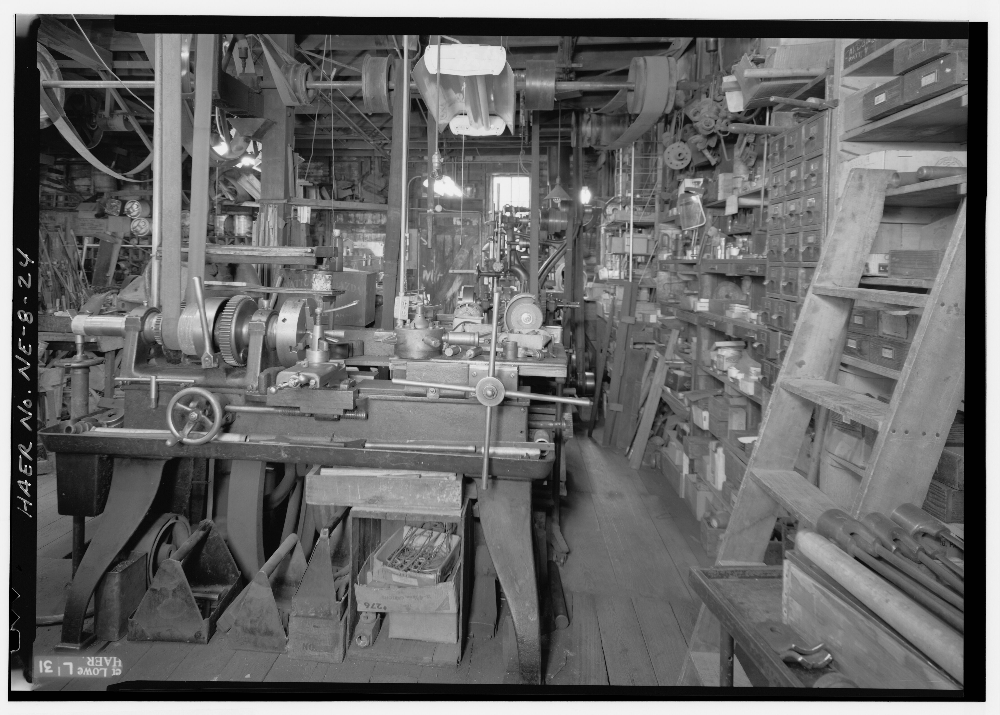
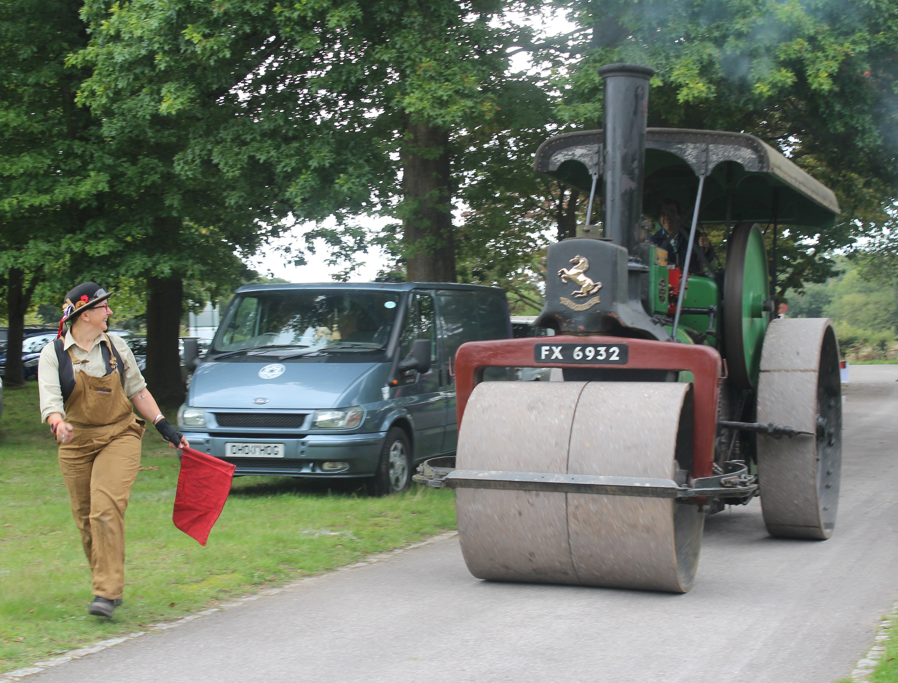

People queue in front of a stand. Not for a car. For a machine that fits on a desk.
Olivetti · Programma 101A machine that fits on a desk, for one person.
Photo: VectorVoyager, CC BY-SA 4.0, Wikimedia Commons
In 1964 Olivetti sold its electronics division to General Electric. Perotto's small team stayed behind.
Legend says someone filed it as a “calculator”, so it was left out of the deal.
Projects survive because someone fights for them.
The real invention was the factory
Adriano Olivetti built a factory with glass walls, a library, a nursery, and housing.
01Workers could see out. The town could see in
02Writers and poets ran HR and social services
03Canteens, transport, housing, health care
Photo: Laurom, CC BY-SA 3.0, Wikimedia Commons
“The factory cannot look only at the profit index. It must distribute wealth, culture, services, democracy.”
«La fabbrica non può guardare solo all'indice dei profitti. Deve distribuire ricchezza, cultura, servizi, democrazia.»ADRIANO OLIVETTI
Photo: Mondadori, 1957, public domain
Ivrea · Nuova ICO · 1970The people around the machine.
Photo: Hnjmk, CC0, Wikimedia Commons
Sixty years later, the question is the same.
Not what the machine can do. What happens to the people around it.
Today · 26 November
09:30The augmented workforceWhose job your project changes, and how
11:30Leading the changeWho will resist, and why
12:30Case sprintYour adoption slide for tomorrow
FRIThe panelYou arrive with the answer ready
Yesterday, with Berni
01Who are you buying from?
02Does it work?
03Would they let you switch it on?
04Will the people actually use it?
Tomorrow the panel will ask the fourth. Today is about that question.
Turin, 1850
CDP turned 176 eight days ago.
It has lived through the telegraph, electricity, computers and the internet. Each time, machines changed faster than habits.
This time, the machine talks back.
Part one
Tasks, not jobs.
AI does not take jobs. It changes how the work is split.
Part one · goal
Your AI project will change someone's job. Let's find out whose, and how.
You leave with · a map of who does what
Look at your surname
Ferrarithe blacksmith
Sartorithe tailor
Molinarithe miller
Barbierithe barber
Pastorethe shepherd
Bottaithe barrel-maker
Fornarithe baker
Notarithe notary
Your ancestors were experts. The craft defined them so much it became their name. The craft disappeared. The name stayed.
A short film
Dave.
A veteran programmer argues with a voice. By the end, you realise it is the AI. ▶ Watch the film
Talk to your neighbour
01Do you respect the time an expert invested, or what that time produced?
02What must you still understand, even if AI does it for you?
03What would your job be if nobody needed you to do it?
What ends is not the craft. It is that someone needs you to do it.
A story about trust
By 1900, elevators could already run without an operator.
c. 1900Automatic elevators exist. People do not trust them
1945Elevator operators strike in New York. The towers of Manhattan stop
1950s–70sBuildings finally switch. More than fifty years after the invention
Elevator operator, Seattle, 1918 · Webster & Stevens, MOHAI, public domain
What changed was not the machine
The industry spent years making people feel safe alone in a box.
01A big red emergency button
02A telephone, in case
03A calm, recorded voice telling you what to do
Source: NPR, 2015
Trust is not a feature of the machine.
It is designed around the people who use it. Where is the red button in your MVP?
Klarna
700
2024: its AI does the work of 700 customer-service agents.
↩
2025: quality drops. Klarna hires people again.
AI took tasks. The job was still there.
Source: Klarna, 2024 · Bloomberg, 2025
Toronto, 2016. Video: Creative Destruction Lab
Geoffrey Hinton · 2016
“People should stop training radiologists now.”
Ten years later, Hinton: “We actually have a huge shortage of radiologists.”
Today a US radiologist earns $571,000 a year.
Why he got it wrong · Luis Garicano
A job is not a task. It is a bundle of tasks.
Read the image
Triage the cases
Advise other doctors
Train the residents
Sign the diagnosis
AI got very good at the first box. The other four hold the job together.
Source: Garicano, Li & Wu, 2026
Weak bundle, strong bundle
WEAK BUNDLE
Tasks are together only because it was cheaper. AI takes some, and the job shrinks.
STRONG BUNDLE
Tasks need each other: judgement, trust, a signature. AI makes the person better, and the person stays.
The people your project touches: weak or strong?
Hands up
758 consultants get AI. What happens to the quality of their work?
It goes upIt goes downBoth. Depends on the task
Harvard · BCG
On tasks AI is good at: +40% quality. On the others: 19 points more mistakes.
The danger is not using AI. It is not knowing where it stops.
The jagged frontier
AI is brilliant at some tasks and wrong at the one next to it. The border is invisible from inside.
Good: split the work clearly, or weave AI into every step. Bad: falling asleep at the wheel.
Source: Harvard Business School · BCG, 2023
Who gains most?
+34%
Productivity of new support agents using AI
≈0
Gain for the most experienced
AI compresses experience. Good for juniors. Uncomfortable for experts.
Source: Brynjolfsson, Li & Raymond, 2023 · 5,179 agents
The broken ladder
Judgement is not taught. It is manufactured by doing the groundwork.
Partners learned on spreadsheets at 2 a.m. Surgeons were residents first. If AI does the junior work, where will your next senior come from?
A profession can be profitable and not reproducible at the same time.
When nobody is watching
California · Dec 2023
Dealer's chatbot agrees to sell a Chevy Tahoe for $1
A user told it to agree with everything. It replied: “That's a deal, and that's a legally binding offer – no takesies backsies.”
Chevrolet of Watsonville · no car was sold
UK · Jan 2024
Delivery bot swears at a customer and calls its own company “the worst delivery firm in the world”
Then it wrote a poem calling DPD “a customer's worst nightmare”.
DPD · ITV, BBC
Canada · Feb 2024
Airline must honour the refund its chatbot promised
The airline argued the bot was a separate entity, “responsible for its own actions”. The tribunal disagreed.
Moffatt v. Air Canada, 2024 BCCRT 149
New York · 2023
A lawyer files a brief citing six cases. None of them exist.
He checked. He asked ChatGPT: “Is Varghese a real case?”
“Yes.”
Fine: $5,000. We trust a confident answer more than our own doubts.
Source: Mata v. Avianca, New York, 2023
Hands up · DOC-AI
The tool flags four missing sections. The document is due today. What happens?
They fix all fourThey send it anyway, and stop using the toolThe tool shows the one that really matters
Design for people in a hurry
If a tool only adds work, people avoid it.
In your MVP, who saves time: the writer or the reviewer?
Hands up · Investment Copilot
The copilot finds a mistake a senior analyst missed. How do you tell them?
Report it to their managerFix it quietlyMake “the copilot caught it” a team win
A safety net, never a scoreboard
Embarrass an expert once, and they stop using the tool.
Who loses status if your MVP works?
Hands up · Contract Intelligence
The agent is right 95% of the time. What do the lawyers do now?
Trust it and sign fasterKeep reviewing every wordSample, and plant known errors
Keep the reviewer awake
Airport scanners show fake threats in a few bags to keep staff alert. Do the same: hide a few known errors, and count how many are caught.
How would you know your reviewers have stopped reviewing?
The work AI creates
Every MVP in this room creates jobs nobody has been given.
OWNERAnswers for the tool. Decides when it is good enough
REVIEWERChecks the output, and has time to do it
CURATORKeeps the tool's documents and examples up to date
ESCALATIONThe person the tool calls when it is unsure
Meanwhile
75%
of knowledge workers already use generative AI at work
78%
of them bring their own tools
Adoption is already happening. With you, or around you.
Source: Microsoft & LinkedIn, 2024 · 31,000 people
Your sheetOne per team. It ends with tomorrow's slide.
Exercise 1 · with your team
Pick one real person who will work with your MVP. Split their work.
The AI does itAlone, with spot checks
AI proposes · person decidesDraft, ranking, flag
Stays humanJudgement, relationships, signature
New tasksReviewing, fixing, escalating
Share
Show us the fourth box.
What new task did you find? Who will do it? Has anyone told them?
AI does not remove work. It moves it.
Usually to the person who reviews. Plan for them.
Coffee.
Part two
The tool is never the change.
Part two · goal
Every change meets resistance. Who will resist your project, and why?
You leave with · who will resist, why, and your answer
The dynamo
1882Edison opens the first power station in New York
1899Electric motors: under 5% of the mechanical drive in US factories
c. 1920About half. Only then does productivity jump
Forty years. Why so long?
Source: Paul David, 1990

A machine shop · around 1920Look up.
Historic American Engineering Record, Library of Congress, public domain
Why it took forty years
FIRST
Factories replaced the steam engine with one big electric motor. Same shafts, same belts, same building.
THEN
A new generation redesigned the floor: one motor per machine, single storey, work flowing in a line.
The gain did not come from the motor. It came from redesigning the work around it.
Most AI projects today are a dynamo installed in a steam factory.
UK government · 2024
The UK government gives Copilot to 1,000 civil servants.
72%
are happy with it
0
measurable productivity gain
People feel good. The organisation does not improve.
Source: UK Department for Business and Trade, 2025

England · todayA steam roller, out for a walk.
Photo: Martinvl, CC BY-SA 4.0, Wikimedia Commons
United Kingdom · 1865
Every mechanical vehicle on the road must be preceded by a man on foot, carrying a red flag.
SPEED4 miles per hour in the country. 2 in town
DISTANCEThe man with the flag: at least 60 yards ahead
1878The flag is dropped. The man on foot stays
1896Repealed. Thirty-one years of machines walking
When we fear a new machine, we make it behave like the old one.
“Every output reviewed by two people.” “Only for internal drafts.” “Pilot for one more year.” What is the red flag in your project?
The J-curve
After a new technology arrives, measured productivity first goes down.
Learning and redesign take time. Warn your sponsor before the dip.
Source: Brynjolfsson, Rock & Syverson, 2021
Vienna, 1847
A young doctor asks colleagues to wash their hands before delivering babies.
18%
mothers dying in his ward
2%
after hand-washing began
The evidence was clear. His colleagues rejected it for decades. Why?
Ignaz Semmelweis, 1860 · public domain
Accepting it meant accepting that their own hands had killed patients.
People rarely resist the change. They resist what the change says about them.
This time is different
Every automation wave hit the factory floor first. This one starts at the desk.
−13%
jobs for 22–25 year-olds in the occupations most exposed to AI
For the first time, change reaches the people who lead it. Including this room.
Source: Stanford Digital Economy Lab, 2025
Six reasons people resist AI
01“It will replace me”The loudest. Not always the strongest
02“My expertise is worth less now”The quiet one. Often senior people
03“I will look incompetent”Learning in public, in front of your team
04“It is my signature on the output”Legal, finance, compliance
05“This is more work, not less”Often true. Take it seriously
06“I don't trust it”Sometimes the most rational person in the room
ADKAR · a simple checklist
AAwarenessDo they know why this is changing?
DDesireWhat is in it for them?
KKnowledgeDo they know how to use it, and when not to?
AAbilityDo they have the time to do it?
RReinforcementWhat stops them going back to the old way?
Source: Prosci
Hands up · FARSIGHT
The tool finds 37 inconsistencies between policies and procedures. Who sees the report first?
The boardEveryone, on the intranetThe process owners, a week before anyone else
Finding is not blaming
If the board sees it first, every owner becomes a suspect. Let owners fix things first.
Who wants to own a system that finds their colleagues' mistakes?
Hands up · Road Investment Optimizer
The ranking puts the committee's favourite project in 14th place. What now?
Adjust the weights until it moves upDo not show itShow it, explain it, let them overrule on record
The tool advises. People decide.
Trust grows by seeing when the model was right, not by agreeing with it.
Live
One project. One sceptic. Sixty seconds.
Give me your project in one sentence. The AI plays the boss who has to live with it.
The prompt · also on your sheet
You are the head of [department] at a large Italian state-owned company. Your team has been told to start using [tool, in one sentence] next month. You are experienced, busy and sceptical. List the five objections you would raise in the meeting, in order of how hard they are to answer, and for each one say what would actually convince you.
Your sheetWho will resist, and why.
Exercise 2 · with your team
Who will resist your project, and what is the real reason?
WhoA role, not a name
The real reasonJob, status, pride, liability, workload, trust
Your answerWhat would actually change their mind
ADKARScore 1–5. Fix the weakest step
Then: the sceptic swap.
Sceptic swap
One of you joins the next team as the sceptical boss.
Your job: knock their plan down. Hosts: write down the best objection.
People rarely resist the tool. They resist what it says about them.
Case sprint
Your MVP. Your people.
One plan. One slide for tomorrow.
Part three · goal
Tomorrow the panel will ask: how will this be adopted? Today you write the answer.
You leave with · your adoption slide, ready for tomorrow
The next hour
01Write your plan and your slide
02Pitch it: two minutes per team
03Close
Plan for what you have built, not what you imagine.
Measure adoption, not only accuracy
A tool with 99% accuracy and zero users has a return of exactly zero.
USEHow many people use it every week
TRUSTHow often people overrule it
VALUETime saved per person, measured
LIMITSHow often it hands over to a person
Your sheetThe first 90 days.
Your sheetThe part that goes into your presentation.
Exercise 3 · with your team
Tomorrow the panel asks: how will this be adopted? Write the answer.
First 90 days · one metric · one owner · four lines.
Pitch · two minutes per team
01Who uses it, and what changes for them
02The resistance we expect, and our answer
03The first 90 days
04How we will know it is being used
If you cannot fill one line, that is your next step.
Uncomfortable conclusion 1
Your MVP works. Nobody has asked yet whether anyone wants it.
Uncomfortable conclusion 2
AI does not remove work. It moves it to whoever reviews.
Uncomfortable conclusion 3
The resistance you will meet is not fear of the machine. It is fear of looking incompetent.
This afternoon
Put this slide in your deck. It is the “next steps” the panel wants to see.
Demo. Evidence. Limits. Adoption.
Back to Ivrea
Olivetti built one of the first personal computers. And a factory with a library.
Today Ivrea is a UNESCO World Heritage Site. Not for the computer. For how it treated people.
“Calling something a utopia is the most convenient way to dismiss what we lack the will, the ability or the courage to do.”
«Il termine utopia è la maniera più comoda per liquidare quello che non si ha voglia, capacità o coraggio di fare.»ADRIANO OLIVETTI
Grazie.
Javier Fuentes Ibáñez javier@ncompany.es · NCompany
Every week, what moved in AI: theindependentsentinel.substack.com
 Rome · 26 November 2026
Rome · 26 November 2026